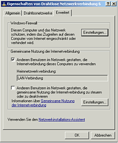
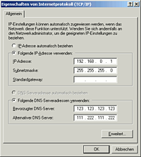

Internetverbindungsfreigabe über Windows
Dieser Artikel wurde für die folgenden Ubuntu-Versionen getestet:
Dieser Artikel ist größtenteils für alle Ubuntu-Versionen gültig.
Zum Verständnis dieses Artikels sind folgende Seiten hilfreich:
Unter Internetverbindungsfreigabe, auch ICS (Internet Connection Sharing) genannt, versteht man die Freigabe der Internetverbindung eines Rechners mit Microsoft Windows als Betriebssystem für weitere Computer im lokalen Netzwerk (Routing). Microsoft bietet ab Windows 98SE die Möglichkeit mehrere PCs gleichzeitig ins Internet zu lassen.
Es soll hier das Vorgehen ab Windows 2000 erklärt werden, da viele Einsteiger, die Linux ausprobieren wollen, ihren "Hauptrechner" mit Windows direkt am DSL-Modem hängen haben und der "Testrechner" mit Ubuntu über diesen eine Internetverbindung herstellen muss. Weite Anleitungen für Windows7 finden sich z.B. bei Youtube  .
.
Natürlich ist die Internetverbindungsfreigabe, oder allgemein Routing, auch auf anderen Betriebssystemen möglich. Für Ubuntu beschreibt der Artikel Router, WLAN Router und Internetverbindungsfreigabe wie es geht.
Üblicherweise wird heute eine DSL-Verbindung freigegeben. So dass das Internet von allen Rechner im Büro, der Wohnung etc. genutzt werden kann. Voraussetzung für den ordentlichen Betrieb ist ein Rechner mit zwei Netzwerkkarten. Eine Karte ist dann mit dem DSL-Modem verbunden, die Zweite mit einem Switch oder per Cross-Over Kabel direkt mit einem weiteren Rechner.
Server¶

ICS aktivieren¶
Die Internetverbindungsfreigabe ist von Haus aus installiert. Sie muss nur noch aktiviert werden. Dazu öffnet man die "Netzwerk- und DFÜ-Verbindungen" unter
"Start -> Einstellungen -> Systemsteuerung"
und klickt mit der rechten Maustaste auf die freizugebende Netzwerkverbindung. Hier geht man nun in die "Eigenschaften". In dem Eigenschaften-Dialog geht man in den Reiter "Gemeinsame Nutzung". Hier kann nun die "Gemeinsame Nutzung der Internetverbindung" aktiviert werden.
Bei Bedarf kann auch noch aktiviert werden, dass diese Netzwerkverbindung automatisch aufgebaut wird, wenn ein angeschlossener Client-Rechner Daten aus dem Internet beziehen möchte. Nachdem die Option aktiviert wurde, muss der Rechner neu gestartet werden. Erst dann ist ICS aktiv.
Feste IP für LAN setzen¶
 Nach dem Neustart muss man wieder in die "Netzwerk- und DFÜ-Verbindungen" unter
"Start -> Einstellungen -> Systemsteuerung"
gehen. Hier öffnet man nun die "Eigenschaften" der normalen LAN Verbindung. Der Netzwerkkarte sollte man eine IP aus dem Bereich der privaten Netze zuweisen. Also z.B.
IP-Adresse: 192.168.0.1
Subnetzmaske: 255.255.255.0
Als DNS-Server sollte man die DNS-Server des genutzten Internetproviders eintragen. Sollte man diese Information nicht zur Hand haben und auch nicht auf der Homepage des Providers finden, so kann man die nötigen IPs auch über eine Eingabeaufforderung
"Start -> Programme -> Zubehör -> Eingabeaufforderung"
und dem Befehl
nslookup
herausfinden. Natürlich zeigt der Befehl nur sinnvolle Daten an, wenn die Internetverbindung steht. Diese IPs müssen dann unter "Folgende DNS-Serveradressen verwenden" eingetragen werden. Die Änderungen werden ohne einen Neustart übernommen.
Clients¶
Der ICS-Dienst auf dem Server aktiviert auch gleich einen DHCP-Server. Das bedeutet, der Windows-Server kann Client-Rechnern die benötigten Netzwerkdaten automatisch übermitteln und den Rechnern auch ihre lokalen IP-Adressen zuweisen. Ein Rechner mit Ubuntu als Betriebssystem muss also nur so konfiguriert werden, dass er seine IP automatisch bezieht... weiterlesen. Teilweise kann dies zu Problemen führen (siehe unten). In diesem Fall ist für den Client eine eigene IP zu vergeben. Die Subnetmaske entspricht der des Windows Servers, die IP-Adresse muss auf jeden Fall eine andere sein. Sie darf sich allerdings nur in der letzten Ziffer von der des Servers unterscheiden (also z.B. 192.168.0.2). Als Standardgateway trägt man nun die IP des Windows-Servers ein.
Problembehebung¶
Ein häufig auftretendes Problem ist ein relativ langsamer Aufbau von Internetseiten auf dem Linux Client. Dies kann evtl. daran liegen, dass Linux und Windows verschiedene Systeme zur Verwaltung der Computernamen verwenden. Der Windows-Server kann deshalb den Computernamen des Linux-Clients nicht in eine IP-Adresse übersetzen. In diesem Fall sollten netzwerkintern nur statische IP-Adressen vergeben werden. Zusätzlich müssen in den hosts Dateien aller im Netzwerk vorhandenen Rechner die Namen der Rechner und deren (statische) IP Adressen angegeben werden. Auf dem Windows-Rechner befindet sich die Datei je nach Version an verschiedenen Orten - am besten nach "hosts" suchen.
Unter Linux findet man sie im /etc Verzeichnis, lässt sich mit einem Texteditor bearbeiten [1] und sollte folgende Einträge beinhalten:
127.0.0.1 localhost 127.0.1.1 clientname.workgroupname 192.168.0.1 servername.workgroupname
Für jeden weiteren Computer im Netzwerk sind analoge Einträge hinzuzufügen. Eine detaillierte Beschreibung der hosts-Datei findet sich hier im Wiki.

- Erstellt mit Inyoka
-
 2004 – 2017 ubuntuusers.de • Einige Rechte vorbehalten
2004 – 2017 ubuntuusers.de • Einige Rechte vorbehalten
Lizenz • Kontakt • Datenschutz • Impressum • Serverstatus -
Serverhousing gespendet von